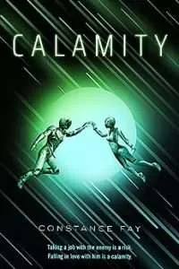
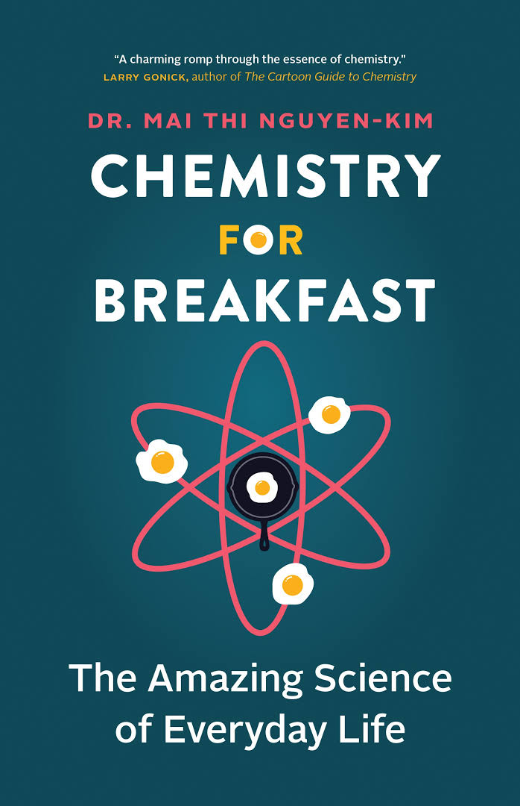
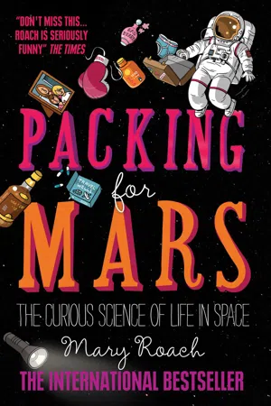

Science Fiction
Science fiction books fuse science and imagination, propelling readers into futuristic worlds with advanced technology and uncharted frontiers.
These stories invite readers on captivating journeys through unexplored mental territories, exploring boundless possibilities.
REVIEWED BOOKS:
Villain by John Scalzi.
Calamity by Constance Fay.
Chemistry for Breakfast: The Amazing Science of Everyday Life
by Mai Thi Nguyen-Kim.Packing for Mars: The Curious Science of Life in the Void
by Mary Roach.
1.REVIEW: Starter Villain by John Scalzi

"Inheriting your uncle’s supervillain business is complicated than you might think. Particularly when you discover who’s running the place. Charlie’s life is going nowhere fast. A divorced substitute teacher living with his cat in a house his siblings want to sell, all he wants is to open a pub downtown, if only the bank will approve his loan. Then his long-lost uncle Jake dies and leaves his supervillain business (complete with island volcano lair) to Charlie. But becoming a supervillain isn’t . Jake had enemies, and now they’re coming after Charlie. His uncle might have been a stand-up, old-fashioned kind of villain, but these are the real thing: rich, soulless predators backed by multinational corporations and venture capital. It’s up to Charlie to win the war his uncle started against a league of supervillains. But with unionized dolphins, hyper-intelligent talking spy cats, and a terrifying henchperson at his side, going bad is starting to look pretty good. In a dog-eat-dog world…be a cat."
2.REVIEW:Calamity by Constance Fay

" The captain of a ragtag mercenary ship is given an offer refuse by the ruthless head of an intergalactic noble family. The only catch? She’ll have to team up with his son–an upsettingly competent hardbody with his own agenda–to get her reward. She’s got a ramshackle spaceship, a misfit crew, and a big problem with its sexy newest member… Temperance Reed, banished from the wealthy and dangerous Fifteen Families, just wants to keep her crew together after their feckless captain ran off with the intern. But she’s drowning in debt and revolutionary new engine technology is about to make her beloved ship obsolete. "
3.REVIEW: Chemistry for Breakfast: The Amazing Science of Everyday Life
by Mai Thi Nguyen-Kim.

"A whirlwind romp through everyday science, perfect for fans of How Stuff Works, Stuff You Should Know and Netflix’s Explained. In this quirky and endlessly surprising book, scientist and award-winning YouTuber Dr. Mai Thi Nguyen-Kim tells us about the amazing science behind everyday things (like drinking water,) and not-so-everyday things (like space travel and baby dinosaurs). Come along for the ride of a lifetime! Perfect for armchair scientists: a wide range of information means readers will never get bored. Told over the course of a single day: Mai shows the scientific reactions that occur from morning to bedtime. Quirky illustrations: break up the text and help readers visualize scientific reactions. Surprising facts: learn why an alarm clock triggers fight-or-flight, what alcohol does to our bodies (and minds), and the science behind the term “love drunk” (plus so much more). See the world in a new way: Mai shows us that science is behind everything we do and feel. Accessible and fun: Mai shows us that we don’t have to be scientists to think like one. Chemistry for Breakfast turns the ordinary into extraordinary,"
4.REVIEW: Packing for Mars: The Curious Science of Life in the Void
by Mary Roach.

“Space is a world devoid of the things we need to live and thrive: air, gravity, hot showers, fresh produce, privacy, beer. Space exploration is in some ways an exploration of what it means to be human. How much can a person give up? How much weirdness can they take? What happens to you when you can’t walk for a year? have sex? smell flowers? What happens if you vomit in your helmet during a space walk? Is it possible for the human body to survive a bailout at 17,000 miles per hour? To answer these questions, space agencies set up all manner of quizzical and startlingly bizarre space simulations. As Mary Roach discovers, it’s possible to preview space without ever leaving Earth. From the space shuttle training toilet to a crash test of NASA’s new space capsule (cadaver filling in for astronaut), Roach takes us on a surreally entertaining trip into the science of life in space and space on Earth.”